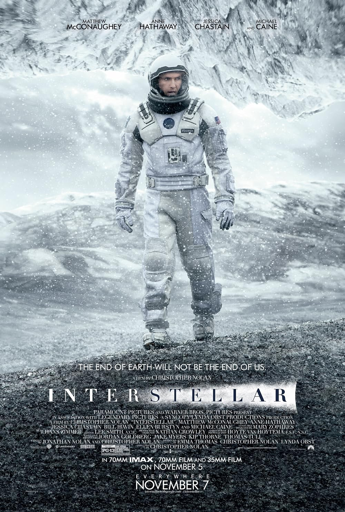

Interstellar

La película
Interstellar es una película de ciencia ficción relacionada con la exploración espacial y los grandes desafíos científicos.
¿Por qué la recomendamos?
Esta película puede ser recomendada cuando la actualidad está relacionada con el espacio, la astronomía, la exploración o nuevos avances científicos.
Información
- Género: Ciencia ficción
- Tema: Espacio y ciencia
- Tipo de recomendación: Actualidad científica
Conexión con la actualidad
The Daily Reel utiliza acontecimientos recientes como punto de partida para encontrar películas que puedan resultar interesantes en relación con esos acontecimientos.